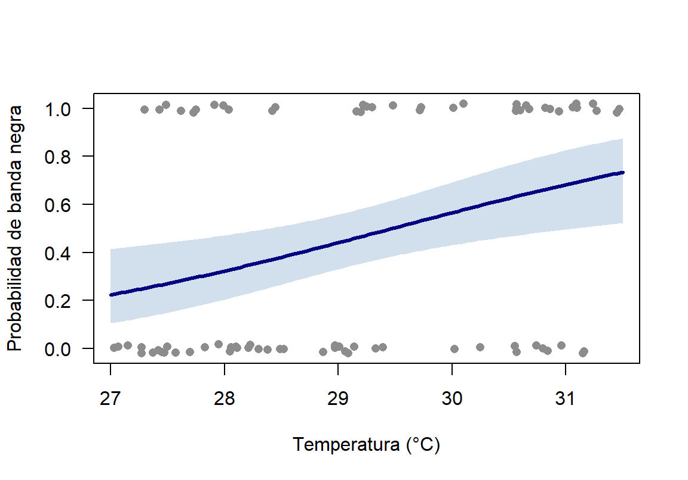

Materiales requeridos para el taller en clase
En los siguientes enlaces se podrán descargar archivos comprimidos de los talleres donde se pueden aplicar procedimientos para los modelos de regresión lineal generalizada - GLM, con datos simulados en ecosistemas del Carbe colombaino (📰 Taller 4. Regresión lineal generalizada).
Nota: una vez se descarguen los materiales, se requiere descomprimirlos antes de realizar cualquier procedimiento y seguir las orientaciones del docente para realizar los ejercicios requeridos.
Diapositivas en vivo - Slides.com

Objetivos del taller
Este taller acompaña la sesión de diapositivas “Modelos Lineales Generalizados (GLM)” (RA1, RA2) del sábado en la tarde de la Semana 2. Al terminar, se podrá:
- Ajustar e interpretar un GLM binomial (enlace logit, odds ratio, prueba de razón de verosimilitud).
- Ajustar e interpretar un GLM Poisson (enlace log, razón de tasas, offset).
- Diagnosticar sobredispersión (φ) y corregirla con cuasi-Poisson o binomial negativa.
- Elegir la familia adecuada según el tipo de variable respuesta y el diseño de muestreo.
Se usan los mismos tres ejemplos de las diapositivas, con las mismas semillas, de modo que los resultados coinciden con los que aparecen en ellas.
Nota
Los datos siguen siendo simulados con set.seed() fijando la semilla en cada sección. Construidos para ilustrar cada modelo con claridad, no para representar mediciones reales.
Código
# Librerías requeridas
library(tidyverse)
library(ggplot2)
library(kableExtra)
# La binomial negativa se ajusta con MASS::glm.nb(). Se llama con el prefijo
# MASS:: para no cargar el paquete, que enmascara dplyr::select()Antes de empezar: ¿qué es un GLM?
Un Modelo Lineal Generalizado tiene tres componentes:
- Componente aleatorio: la distribución de la variable respuesta dentro de la familia exponencial. La varianza queda ligada a la media: binomial Var = np(1 − p); Poisson Var = μ.
- Componente sistemático: el predictor lineal \(\eta = \beta_0 + \beta_1X_1 + \dots\), igual que en
lm(). - Función de enlace \(g(\mu)\): conecta la media esperada con el predictor lineal, \(\eta = g(\mu)\).
NotaNo es lo mismo que transformar Y
Transformar log(Y) antes de un lm() altera cada observación y falla con los ceros (log 0 = −∞), lo que obliga a recursos como log(Y + 1). En un GLM, la función de enlace actúa sobre el valor esperado \(\mu\) y no sobre los datos: la varianza se modela en su escala real.
| Tipo de variable respuesta | Familia | Enlace | Ejemplo |
|---|---|---|---|
| Continua, aprox. normal | Gaussiana | Identidad | Longitud corporal de un pez |
| Binaria (0/1) o proporción | Binomial | Logit | Presencia/ausencia, supervivencia |
| Conteo (0, 1, 2, …) | Poisson | Log | Individuos por cuadrante |
| Conteo sobredisperso | Binomial negativa | Log | Peces por transecto (cardúmenes) |
NotaProporciones
Una proporción (p. ej., juveniles vivos de un total por tanque) se modela con los conteos de éxitos y fracasos: glm(cbind(vivos, muertos) ~ x, family = binomial). El porcentaje suelto pierde el tamaño de muestra de cada unidad: 3 de 4 no informa lo mismo que 30 de 40.
Se define desde ya una función para el parámetro de dispersión, que se usará en las Partes 2, 3 y 5:
Código
# φ = suma de residuos de Pearson al cuadrado / g.l. residuales
phi <- function(modelo) {
sum(residuals(modelo, type = "pearson")^2) / modelo$df.residual
}Parte 1 — GLM binomial: enfermedad de coral y temperatura
Pregunta: ¿Aumenta con la temperatura la probabilidad de que una colonia de coral presente signos de enfermedad de banda negra?
Código
# Reproducibilidad
set.seed(365)
# Número de colonias
n <- 80
# Temperatura del agua (°C)
temperatura <- round(runif(n, 27, 31.5), 2)
# Presencia (1) o ausencia (0) de la enfermedad
enfermo <- rbinom(n, 1, plogis(-14.5 + 0.5 * temperatura))
# Crear base de datos
coral_enf <- data.frame(colonia = paste0("C", 1:n), temperatura, enfermo)
# Tabla con los datos
head(coral_enf, 10) %>%
kbl(booktabs = TRUE, longtable = FALSE) %>%
kable_classic(full_width = F) %>%
kableExtra::row_spec(0, bold = TRUE)| colonia | temperatura | enfermo |
|---|---|---|
| C1 | 30.60 | 1 |
| C2 | 27.42 | 0 |
| C3 | 28.04 | 1 |
| C4 | 27.15 | 0 |
| C5 | 29.20 | 1 |
| C6 | 29.14 | 0 |
| C7 | 29.39 | 0 |
| C8 | 31.09 | 1 |
| C9 | 30.25 | 0 |
| C10 | 30.02 | 0 |
Código
# Colonias sanas (0) y enfermas (1)
table(coral_enf$enfermo)
0 1
43 37 Código
# Ajustar GLM binomial
mod_enf <- glm(enfermo ~ temperatura, data = coral_enf, family = binomial)
# Consultar resultados
summary(mod_enf)
Call:
glm(formula = enfermo ~ temperatura, family = binomial, data = coral_enf)
Coefficients:
Estimate Std. Error z value Pr(>|z|)
(Intercept) -14.7714 5.1927 -2.845 0.00445 **
temperatura 0.5012 0.1777 2.821 0.00479 **
---
Signif. codes: 0 '***' 0.001 '**' 0.01 '*' 0.05 '.' 0.1 ' ' 1
(Dispersion parameter for binomial family taken to be 1)
Null deviance: 110.45 on 79 degrees of freedom
Residual deviance: 101.76 on 78 degrees of freedom
AIC: 105.76
Number of Fisher Scoring iterations: 4La columna z value es la prueba de Wald: z = b₁ / EE. En un GLM se usa z y no t, porque la varianza la fija la familia (binomial o Poisson) en lugar de estimarse aparte.
Prueba de razón de verosimilitud
Código
# Comparar la devianza con y sin temperatura
anova(mod_enf, test = "Chisq")Analysis of Deviance Table
Model: binomial, link: logit
Response: enfermo
Terms added sequentially (first to last)
Df Deviance Resid. Df Resid. Dev Pr(>Chi)
NULL 79 110.45
temperatura 1 8.6931 78 101.76 0.003194 **
---
Signif. codes: 0 '***' 0.001 '**' 0.01 '*' 0.05 '.' 0.1 ' ' 1Compara la devianza del modelo nulo con la del modelo con temperatura. Es la prueba preferida para decidir si un predictor aporta, sobre todo con muestras pequeñas.
Código
# Proporción de la devianza explicada (análogo aproximado al r²)
1 - mod_enf$deviance / mod_enf$null.deviance[1] 0.07870429
ImportanteSignificativo no es lo mismo que explicativo
La temperatura reduce la devianza solo un 7.9 %. El efecto es real, pero otros factores (especie hospedera, sedimentación, patógenos) explican la mayor parte de la variación.
Interpretación: odds ratio
Código
# OR = exp(b) con su IC 95 %
exp(cbind(OR = coef(mod_enf), confint(mod_enf))) OR 2.5 % 97.5 %
(Intercept) 3.844595e-07 9.039334e-12 0.007247974
temperatura 1.650694e+00 1.178433e+00 2.376990861Por cada +1 °C, los odds de que la colonia esté enferma se multiplican por 1.65 (IC 95 %: 1.18–2.38). Como el IC del OR no incluye 1, la asociación es estadísticamente significativa.
El OR del intercepto es prácticamente 0 porque corresponde a una temperatura de 0 °C, que no tiene sentido biológico. Centrar el predictor lo vuelve interpretable:
Código
# Temperatura centrada en 29 °C
coral_enf$temp_c <- coral_enf$temperatura - 29
# Ajustar el modelo centrado
mod_enf_c <- glm(enfermo ~ temp_c, data = coral_enf, family = binomial)
# Probabilidad predicha a 29 °C
plogis(coef(mod_enf_c)[1])(Intercept)
0.4410894 La pendiente no cambia; solo cambia el significado del intercepto.
Probabilidades predichas
Código
# Temperaturas de interés
nd <- data.frame(temperatura = 28:31)
# Probabilidad predicha en la escala de respuesta
data.frame(nd, prob = round(predict(mod_enf, newdata = nd, type = "response"), 3)) temperatura prob
1 28 0.323
2 29 0.441
3 30 0.566
4 31 0.683
Nota
predict(..., type = "response") devuelve la probabilidad (0 a 1). Sin type = "response" se obtiene el predictor lineal en escala logit.
Código
# Secuencia de temperaturas
tt <- seq(27, 31.5, length = 100)
# Predicción en escala logit con su error estándar
pr <- predict(mod_enf, data.frame(temperatura = tt), se.fit = TRUE)
# Datos observados (0/1) con un leve desplazamiento vertical
plot(jitter(enfermo, 0.1) ~ temperatura, data = coral_enf,
pch = 16, col = "grey55", las = 1,
xlab = "Temperatura (°C)",
ylab = "Probabilidad de banda negra")
# Banda del IC 95 %, retransformada con plogis()
polygon(c(tt, rev(tt)),
plogis(c(pr$fit - 1.96 * pr$se.fit, rev(pr$fit + 1.96 * pr$se.fit))),
col = adjustcolor("steelblue", 0.25), border = NA)
# Curva ajustada
lines(tt, plogis(pr$fit), lwd = 3, col = "navy")
El intervalo se construye en la escala logit y luego se retransforma con plogis(), para que nunca salga de [0, 1].
TipVersión con
ggplot2
Código
# Construir gráfico
ggplot(coral_enf, aes(x = temperatura, y = enfermo)) +
geom_jitter(height = 0.03, width = 0, color = "grey55") +
geom_smooth(method = "glm", method.args = list(family = binomial),
color = "navy", fill = "steelblue") + # Curva logística e IC 95 %
# Etiquetas de ejes
labs(x = "Temperatura (°C)",
y = "Probabilidad de banda negra") +
# Aplicar tema
theme_bw()Para discutir: el OR es constante (1.65 por °C), pero la probabilidad predicha sube 12 puntos entre 28 y 29 °C y 12 entre 30 y 31 °C, y subiría menos en los extremos de la curva. ¿Por qué un OR constante no implica un aumento constante de la probabilidad?
TipCómo reportar el resultado
En la sección de resultados de un artículo o de la tesis, se reportan el efecto en escala interpretable (OR) con su IC, la prueba de razón de verosimilitud y la devianza explicada. Por ejemplo:
La probabilidad de presentar banda negra aumentó con la temperatura del agua (GLM binomial, enlace logit; OR = 1,65 por °C; IC 95 %: 1,18–2,38; χ²1 = 8,69; p = 0,003), aunque la temperatura explicó solo el 7,9 % de la devianza.
Esta estructura es la que se espera en la Evidencia 2.
AdvertenciaDiseño (RA1)
Si varias colonias provienen del mismo arrecife y comparten la misma temperatura, no son réplicas independientes para el efecto de la temperatura. En ese caso la unidad de análisis sería el arrecife o se requeriría un modelo mixto (fuera del alcance de esta sesión).
Parte 2 — GLM Poisson: langosta espinosa y densidad de pasto

Pregunta: ¿Aumenta el número de juveniles de Panulirus argus por parche de pastos marinos con la densidad del pasto?
Código
# Reproducibilidad
set.seed(28)
# Número de parches
n2 <- 32
# Índice de densidad de pasto (1–10)
densidad_pasto <- round(runif(n2, 1, 10), 1)
# Conteo de juveniles por parche
juveniles <- rpois(n2, exp(0.9 + 0.15 * densidad_pasto))
# Crear base de datos
langosta <- data.frame(parche = paste0("L", 1:n2), densidad_pasto, juveniles)
# Tabla con los datos
head(langosta, 10) %>%
kbl(booktabs = TRUE, longtable = FALSE) %>%
kable_classic(full_width = F) %>%
kableExtra::row_spec(0, bold = TRUE)| parche | densidad_pasto | juveniles |
|---|---|---|
| L1 | 1.3 | 5 |
| L2 | 1.8 | 5 |
| L3 | 5.3 | 4 |
| L4 | 9.0 | 13 |
| L5 | 1.8 | 3 |
| L6 | 7.8 | 7 |
| L7 | 1.3 | 3 |
| L8 | 8.8 | 8 |
| L9 | 6.1 | 6 |
| L10 | 9.5 | 9 |
Código
# Ajustar GLM Poisson
mod_lang <- glm(juveniles ~ densidad_pasto, data = langosta, family = poisson)
# Consultar resultados
summary(mod_lang)
Call:
glm(formula = juveniles ~ densidad_pasto, family = poisson, data = langosta)
Coefficients:
Estimate Std. Error z value Pr(>|z|)
(Intercept) 0.83159 0.19913 4.176 2.96e-05 ***
densidad_pasto 0.15040 0.02893 5.198 2.02e-07 ***
---
Signif. codes: 0 '***' 0.001 '**' 0.01 '*' 0.05 '.' 0.1 ' ' 1
(Dispersion parameter for poisson family taken to be 1)
Null deviance: 59.598 on 31 degrees of freedom
Residual deviance: 31.405 on 30 degrees of freedom
AIC: 144.07
Number of Fisher Scoring iterations: 4Interpretación: razón de tasas
Código
# Razón de tasas del predictor
exp(coef(mod_lang)["densidad_pasto"])densidad_pasto
1.162295 Código
# IC 95 % en escala exp()
exp(confint(mod_lang)) 2.5 % 97.5 %
(Intercept) 1.533645 3.350367
densidad_pasto 1.098824 1.230965Por cada unidad adicional del índice de densidad de pasto, la abundancia esperada de juveniles se multiplica por 1.16. Esta cantidad, exp(β), es la razón de tasas del predictor.
Verificación de la equidispersión
Código
# Parámetro de dispersión
phi(mod_lang)[1] 1.005818φ ≈ 1.01: muy cerca de 1. Este Poisson, sin corrección adicional, es adecuado para estos datos.
TipEsfuerzo de muestreo desigual: offset
Si los parches tuvieran áreas distintas, se modelaría la densidad (juveniles por m²) incluyendo el área como offset:
glm(juveniles ~ densidad_pasto + offset(log(area_m2)), family = poisson, data = langosta)
El coeficiente de densidad_pasto pasa a describir el cambio en la tasa por unidad de área, y un parche grande deja de parecer más abundante solo por su tamaño. El estudio de caso (Parte 5) muestra qué ocurre cuando se omite.
Para discutir: si los parches con más pasto fueran, además, los más grandes, y no se incluyera el área como offset, ¿la razón de tasas de la densidad de pasto quedaría sobrestimada o subestimada? ¿Por qué?
Parte 3 — Sobredispersión: peces de arrecife y complejidad estructural

Pregunta: ¿Aumenta la abundancia de peces por transecto con la complejidad estructural (rugosidad) del arrecife?
Código
# Reproducibilidad
set.seed(187)
# Número de transectos
n3 <- 40
# Complejidad estructural (rugosidad, 1–10)
complejidad_estructural <- round(runif(n3, 1, 10), 1)
# Conteos agregados (binomial negativa)
abundancia <- rnbinom(n3, mu = exp(1.0 + 0.18 * complejidad_estructural), size = 2)
# Crear base de datos
arrecife <- data.frame(transecto = paste0("T", 1:n3), complejidad_estructural, abundancia)
# Tabla con los datos
head(arrecife, 10) %>%
kbl(booktabs = TRUE, longtable = FALSE) %>%
kable_classic(full_width = F) %>%
kableExtra::row_spec(0, bold = TRUE)| transecto | complejidad_estructural | abundancia |
|---|---|---|
| T1 | 3.6 | 0 |
| T2 | 1.9 | 7 |
| T3 | 7.7 | 8 |
| T4 | 3.6 | 3 |
| T5 | 5.4 | 7 |
| T6 | 9.7 | 7 |
| T7 | 4.9 | 6 |
| T8 | 8.3 | 9 |
| T9 | 1.9 | 1 |
| T10 | 9.0 | 15 |
Paso 1 — Ajustar el Poisson e inspeccionar φ
Código
# Ajustar GLM Poisson
mod_pois <- glm(abundancia ~ complejidad_estructural, data = arrecife, family = poisson)
# Consultar resultados
summary(mod_pois)
Call:
glm(formula = abundancia ~ complejidad_estructural, family = poisson,
data = arrecife)
Coefficients:
Estimate Std. Error z value Pr(>|z|)
(Intercept) 0.88980 0.16076 5.535 3.12e-08 ***
complejidad_estructural 0.18702 0.02378 7.865 3.70e-15 ***
---
Signif. codes: 0 '***' 0.001 '**' 0.01 '*' 0.05 '.' 0.1 ' ' 1
(Dispersion parameter for poisson family taken to be 1)
Null deviance: 151.068 on 39 degrees of freedom
Residual deviance: 86.764 on 38 degrees of freedom
AIC: 230.28
Number of Fisher Scoring iterations: 5Código
# Parámetro de dispersión
phi(mod_pois)[1] 2.216667φ ≈ 2.22, muy por encima de 1.2: hay sobredispersión. Los errores estándar del Poisson están subestimados y sus valores p exageran la evidencia.
Nota¿Pearson o devianza?
Aquí φ se calcula con los residuos de Pearson (la opción estándar). La razón devianza residual / g.l. es una aproximación que suele dar valores parecidos (en este caso, 2.28).
Paso 2 — Dos formas de corregir la sobredispersión
a. Cuasi-Poisson. Supone Var = φμ. Mantiene los mismos coeficientes β del Poisson y multiplica los errores estándar por √φ. Al no ser una distribución completa, no permite calcular AIC.
Código
# Ajustar cuasi-Poisson
mod_qp <- glm(abundancia ~ complejidad_estructural, data = arrecife, family = quasipoisson)
# Consultar resultados
summary(mod_qp)
Call:
glm(formula = abundancia ~ complejidad_estructural, family = quasipoisson,
data = arrecife)
Coefficients:
Estimate Std. Error t value Pr(>|t|)
(Intercept) 0.8898 0.2394 3.718 0.000646 ***
complejidad_estructural 0.1870 0.0354 5.282 5.48e-06 ***
---
Signif. codes: 0 '***' 0.001 '**' 0.01 '*' 0.05 '.' 0.1 ' ' 1
(Dispersion parameter for quasipoisson family taken to be 2.216667)
Null deviance: 151.068 on 39 degrees of freedom
Residual deviance: 86.764 on 38 degrees of freedom
AIC: NA
Number of Fisher Scoring iterations: 5b. Binomial negativa. Supone Var = μ + μ²/θ: añade el parámetro θ (a menor θ, mayor agregación). Es un modelo de verosimilitud completa y sí permite comparar con AIC.
Código
# Ajustar binomial negativa
mod_nb <- MASS::glm.nb(abundancia ~ complejidad_estructural, data = arrecife)
# Consultar resultados
summary(mod_nb)
Call:
MASS::glm.nb(formula = abundancia ~ complejidad_estructural,
data = arrecife, init.theta = 6.111377304, link = log)
Coefficients:
Estimate Std. Error z value Pr(>|z|)
(Intercept) 0.93119 0.21665 4.298 1.72e-05 ***
complejidad_estructural 0.17968 0.03513 5.115 3.14e-07 ***
---
Signif. codes: 0 '***' 0.001 '**' 0.01 '*' 0.05 '.' 0.1 ' ' 1
(Dispersion parameter for Negative Binomial(6.1114) family taken to be 1)
Null deviance: 72.538 on 39 degrees of freedom
Residual deviance: 44.024 on 38 degrees of freedom
AIC: 217.79
Number of Fisher Scoring iterations: 1
Theta: 6.11
Std. Err.: 2.79
2 x log-likelihood: -211.789 Código
# IC 95 % en escala exp()
exp(confint(mod_nb)) 2.5 % 97.5 %
(Intercept) 1.659897 3.844982
complejidad_estructural 1.119485 1.281541
Nota
θ estimado = 6.11, aunque los datos se simularon con θ = 2. Con 40 transectos, θ se estima con mucha incertidumbre (ver Std. Err. en la salida): es normal que difiera del valor generador.
Paso 3 — Comparar los tres modelos
Código
# Extraer la fila del predictor de cada modelo
coef_de <- function(m) summary(m)$coefficients["complejidad_estructural", ]
# Tabla de comparación
data.frame(
modelo = c("Poisson", "Cuasi-Poisson", "Binomial negativa"),
beta = round(sapply(list(mod_pois, mod_qp, mod_nb), function(m) coef_de(m)[1]), 3),
EE = round(sapply(list(mod_pois, mod_qp, mod_nb), function(m) coef_de(m)[2]), 3),
p = format(signif(sapply(list(mod_pois, mod_qp, mod_nb), function(m) coef_de(m)[4]), 3)),
AIC = round(c(AIC(mod_pois), NA, AIC(mod_nb)), 2)
) %>%
kbl(booktabs = TRUE, longtable = FALSE) %>%
kable_classic(full_width = F) %>%
kableExtra::row_spec(0, bold = TRUE)| modelo | beta | EE | p | AIC |
|---|---|---|---|---|
| Poisson | 0.187 | 0.024 | 3.70e-15 | 230.28 |
| Cuasi-Poisson | 0.187 | 0.035 | 5.48e-06 | NA |
| Binomial negativa | 0.180 | 0.035 | 3.14e-07 | 217.79 |
El coeficiente apenas cambia (0.187 → 0.180), pero el error estándar crece de 0.024 a 0.035 y el AIC mejora de 230.3 a 217.8. La binomial negativa es el modelo más honesto para estos datos con agregación biológica. El cuasi-Poisson no aparece en la comparación por AIC porque no tiene verosimilitud completa, aunque sigue siendo válido cuando solo interesa corregir errores estándar y valores p.
TipCómo reportar el resultado
La abundancia de peces aumentó con la complejidad estructural del arrecife (GLM binomial negativa, enlace log; razón de tasas = 1,20 por unidad de rugosidad; IC 95 %: 1,12–1,28; p < 0,001; θ = 6,1). Se descartó el modelo Poisson por sobredispersión (φ = 2,22; ΔAIC = 12,5).
Parte 4 — Lista de verificación antes de reportar el GLM
Código
# Función de verificación
checklist_glm <- function(modelo) {
fam <- family(modelo)$family
cat("Familia:", fam, "\n")
cat("Coeficientes en escala exp():\n")
print(round(exp(coef(modelo)), 3))
if (fam == "poisson") {
f <- phi(modelo)
cat("phi:", round(f, 2), ifelse(f > 1.2, "-> revisar sobredispersion", "-> OK"), "\n")
}
cat("AIC:", round(AIC(modelo), 2), "\n\n")
}
# Aplicar a los modelos del taller
checklist_glm(mod_enf)Familia: binomial
Coeficientes en escala exp():
(Intercept) temperatura
0.000 1.651
AIC: 105.76 Código
checklist_glm(mod_lang)Familia: poisson
Coeficientes en escala exp():
(Intercept) densidad_pasto
2.297 1.162
phi: 1.01 -> OK
AIC: 144.07 Código
checklist_glm(mod_pois)Familia: poisson
Coeficientes en escala exp():
(Intercept) complejidad_estructural
2.435 1.206
phi: 2.22 -> revisar sobredispersion
AIC: 230.28 Antes de reportar cualquier GLM, conviene verificar:
- ¿Se eligió la familia según el tipo real de la variable respuesta?
- ¿Se reportaron los efectos en escala interpretable (OR o razón de tasas) con su IC 95 %?
- ¿Se evaluó el efecto con la prueba de razón de verosimilitud (
anova(..., test = "Chisq")), además de Wald? - ¿Se calculó φ en los modelos Poisson y se corrigió con cuasi-Poisson o binomial negativa si φ > 1.2?
- ¿Se incluyó un offset cuando el esfuerzo de muestreo difiere entre unidades?
- ¿Se compararon modelos con AIC y se evitó extrapolar fuera del rango observado de los predictores?
Parte 5 — Estudio de caso: nidos de tortuga caguama e iluminación artificial

Materiales requeridos para el taller en clase
En los siguientes enlaces se podrán descargar archivos comprimidos de los talleres donde se pueden aplicar procedimientos para los GLM, con datos simulados en ecosistemas del Carbe colombaino (📰 Taller4 GLM).
- 📰 Taller4 GLM * Pendiente de incluir.
Nota: una vez se descarguen los materiales, se requiere descomprimirlos antes de realizar cualquier procedimiento y seguir las orientaciones del docente para realizar los ejercicios requeridos.
Diapositivas en vivo - Slides.com
- 📰 Diapositivas del Taller4 GLM * Pendiente de incluir.
A continuación se presentan el contexto y los datos; la decisión se toma con los mismos criterios de la lista de verificación (Parte 4) y del árbol de decisión de las diapositivas.
NotaEl contexto
Un programa de monitoreo de tortuga caguama (Caretta caretta) en playas del Caribe del Magdalena registró el número de nidos en una temporada en 36 segmentos de playa. Los segmentos se delimitaron entre puntos de acceso, así que su longitud varía (de menos de 1 km a más de 3 km). En cada segmento se midió la iluminación artificial nocturna (índice 0–10), porque la luz desorienta a las hembras que buscan dónde anidar. Los segmentos más iluminados, cercanos a poblaciones, tienden a ser los más cortos.
Antes de escribir código, conviene responder:
- ¿Qué tipo de variable respuesta es el número de nidos? Con eso, ¿qué familia y qué enlace corresponden?
- ¿El esfuerzo de muestreo es igual en todos los segmentos? Si no lo es, ¿cómo se incorpora en el modelo?
- Después de ajustar, ¿qué se debe revisar antes de interpretar el efecto de la iluminación?
A continuación se simulan los datos y se ajusta, primero, el modelo más ingenuo:
Código
# Reproducibilidad
set.seed(2026)
# Número de segmentos de playa
n4 <- 36
# Iluminación artificial nocturna (índice 0–10)
iluminacion <- round(runif(n4, 0, 10), 1)
# Longitud de cada segmento (km): los más iluminados son más cortos
longitud_km <- round(pmax(0.4, 3.2 - 0.22 * iluminacion + rnorm(n4, 0, 0.4)), 2)
# Nidos por segmento: tasa por km × longitud, con agregación
nidos <- rnbinom(n4, mu = longitud_km * exp(1.6 - 0.15 * iluminacion), size = 3)
# Crear base de datos
tortuga <- data.frame(segmento = paste0("S", 1:n4), iluminacion, longitud_km, nidos)
# Tabla con los datos
head(tortuga, 10) %>%
kbl(booktabs = TRUE, longtable = FALSE) %>%
kable_classic(full_width = F) %>%
kableExtra::row_spec(0, bold = TRUE)| segmento | iluminacion | longitud_km | nidos |
|---|---|---|---|
| S1 | 7.0 | 1.34 | 2 |
| S2 | 5.6 | 2.24 | 0 |
| S3 | 1.4 | 2.76 | 6 |
| S4 | 2.9 | 2.50 | 2 |
| S5 | 5.6 | 1.41 | 0 |
| S6 | 0.3 | 3.72 | 6 |
| S7 | 4.7 | 2.19 | 14 |
| S8 | 8.6 | 2.07 | 5 |
| S9 | 2.5 | 3.34 | 18 |
| S10 | 5.8 | 1.95 | 3 |
Código
# Dividir ventana gráfica
par(mfrow = c(1, 2))
# Nidos por segmento vs. iluminación
plot(nidos ~ iluminacion, data = tortuga,
pch = 19, col = "steelblue",
xlab = "Iluminación artificial (índice)", ylab = "Nidos por segmento",
main = "Conteo bruto")
# Longitud del segmento vs. iluminación
plot(longitud_km ~ iluminacion, data = tortuga,
pch = 19, col = "darkorange",
xlab = "Iluminación artificial (índice)", ylab = "Longitud del segmento (km)",
main = "Esfuerzo de muestreo")
Código
# Restaurar ventana
par(mfrow = c(1, 1))Código
# Modelo ingenuo: Poisson sin considerar la longitud del segmento
mod_ingenuo <- glm(nidos ~ iluminacion, data = tortuga, family = poisson)
# Razón de tasas e IC 95 %
exp(cbind(RT = coef(mod_ingenuo), confint(mod_ingenuo))) RT 2.5 % 97.5 %
(Intercept) 17.5308429 14.8783832 20.5261860
iluminacion 0.7707131 0.7300207 0.8119668Código
# Parámetro de dispersión
phi(mod_ingenuo)[1] 5.349368Con los dos gráficos y esta salida en mano, se debe tomar una decisión antes de seguir leyendo: ¿se reporta el modelo ingenuo? Si no, ¿qué dos cambios requiere?
TipVerificación del razonamiento (clic para revelar)
1. Tipo de respuesta: es un conteo (0, 1, 2, …): familia Poisson con enlace log como punto de partida.
2. Esfuerzo: los segmentos miden distinto, así que un segmento largo acumula más nidos solo por su tamaño. Lo que interesa es la tasa de nidos por km, y se modela con offset(log(longitud_km)). El segundo gráfico muestra además que la longitud está muy correlacionada con la iluminación (r = -0.86): omitir el offset mezcla el efecto de la luz con el de la longitud.
3. Lo que hay que revisar: φ. Con φ = 5.35 en el modelo ingenuo, la sobredispersión es evidente, algo típico de nidos agregados en tramos favorables de playa.
Se ajusta el Poisson con offset y se revisa de nuevo φ:
Código
# Poisson con offset: modela nidos por km
mod_offset <- glm(nidos ~ iluminacion + offset(log(longitud_km)),
data = tortuga, family = poisson)
# Parámetro de dispersión
phi(mod_offset)[1] 4.656573El offset corrige el esfuerzo, pero la sobredispersión persiste (φ = 4.66). Se ajusta la binomial negativa con el mismo offset:
Código
# Binomial negativa con offset
mod_tortuga <- MASS::glm.nb(nidos ~ iluminacion + offset(log(longitud_km)),
data = tortuga)
# Consultar resultados
summary(mod_tortuga)
Call:
MASS::glm.nb(formula = nidos ~ iluminacion + offset(log(longitud_km)),
data = tortuga, init.theta = 2.360427351, link = log)
Coefficients:
Estimate Std. Error z value Pr(>|z|)
(Intercept) 1.69790 0.20808 8.16 3.36e-16 ***
iluminacion -0.19027 0.05256 -3.62 0.000295 ***
---
Signif. codes: 0 '***' 0.001 '**' 0.01 '*' 0.05 '.' 0.1 ' ' 1
(Dispersion parameter for Negative Binomial(2.3604) family taken to be 1)
Null deviance: 51.225 on 35 degrees of freedom
Residual deviance: 38.603 on 34 degrees of freedom
AIC: 210.36
Number of Fisher Scoring iterations: 1
Theta: 2.360
Std. Err.: 0.766
2 x log-likelihood: -204.357 Código
# Razón de tasas e IC 95 %
exp(cbind(RT = coef(mod_tortuga), confint(mod_tortuga))) RT 2.5 % 97.5 %
(Intercept) 5.4624391 3.6396352 8.4547008
iluminacion 0.8267387 0.7412182 0.9187815Para observar la comparación completa, así se ven los tres modelos lado a lado:
Código
# Tabla de comparación
data.frame(
modelo = c("Poisson sin offset", "Poisson con offset", "Binomial negativa con offset"),
RT_iluminacion = round(exp(c(coef(mod_ingenuo)[2], coef(mod_offset)[2], coef(mod_tortuga)[2])), 3),
phi = round(c(phi(mod_ingenuo), phi(mod_offset), phi(mod_tortuga)), 2),
AIC = round(c(AIC(mod_ingenuo), AIC(mod_offset), AIC(mod_tortuga)), 1)
) %>%
kbl(booktabs = TRUE, longtable = FALSE) %>%
kable_classic(full_width = F) %>%
kableExtra::row_spec(0, bold = TRUE)| modelo | RT_iluminacion | phi | AIC |
|---|---|---|---|
| Poisson sin offset | 0.771 | 5.35 | 298.3 |
| Poisson con offset | 0.854 | 4.66 | 279.5 |
| Binomial negativa con offset | 0.827 | 1.03 | 210.4 |
Los tres AIC son comparables, porque la respuesta es la misma (el conteo de nidos); el offset solo fija un término del predictor lineal. El AIC mejora con cada decisión (298.3 → 279.5 → 210.4), y en la binomial negativa φ ≈ 1.03 confirma que la sobredispersión quedó resuelta. Lo que más cambia es la razón de tasas:
- Sin offset, cada unidad de iluminación “reduce” los nidos un 23 %, pero parte de esa reducción se debe a que los segmentos iluminados son más cortos.
- Con offset y binomial negativa, la densidad de nidos por km se reduce un 17 % por unidad de iluminación (IC 95 % de la razón de tasas: 0.74–0.92).
La conclusión biológica se mantiene (la iluminación reduce la anidación), pero el tamaño del efecto que se reporta depende de dos decisiones del diseño y del análisis: considerar el esfuerzo y la agregación. El modelo que se reporta es mod_tortuga.
Cierre — Una base para el futuro proyecto de grado
Actividad en clase (10 minutos, sin código)
En parejas, se responde sobre el proyecto de grado de cada integrante:
- ¿La variable de interés es presencia/ausencia, una proporción o un conteo?
- Según eso, ¿qué familia y qué función de enlace corresponden?
- ¿Qué predictores ambientales o biológicos se incluirían, y con qué justificación?
- Si es un conteo, ¿se esperaría sobredispersión (agregación, parches, exceso de ceros) o un esfuerzo desigual que requiera offset?
Luego, se escribe la ecuación del GLM en palabras: “la probabilidad / el conteo de ___ depende de ___, y se espera que [aumente/disminuya] porque ___”.
Antes de la próxima sesión (tarea corta)
Se puede adaptar el código de este taller a la propia idea, con valores simulados pero plausibles para el sistema de estudio:
- Se copia la sección más parecida a la variable propia (binaria → Parte 1; conteo → Parte 2; conteo con esfuerzo desigual → Parte 5).
- Se cambian los nombres de las variables y los coeficientes simulados por los esperados en el propio tema.
- Se ejecutan
anova(..., test = "Chisq")ychecklist_glm()sobre el modelo. ¿La salida de R es coherente con lo planteado?
Con esto se cierran las Evidencias 1 y 2 (inferencia, regresión y GLM) y se completa el flujo: elegir familia → considerar el esfuerzo → ajustar → interpretar en escala exp() → diagnosticar → comparar modelos.
Material de apoyo

Para repasar y profundizar después de la sesión:
- Cuestionario 1 · GLM binomial y Poisson — 12 preguntas de opción múltiple con pista y explicación, basadas en las Partes 1 a 5 de este taller.
- Cuestionario 2 · GLM binomial y Poisson — escenarios nuevos con preguntas abiertas para interpretar salidas de modelos, con retroalimentación al final.
Referencias
Quinn, G. P., & Keough, M. J. (2024). Experimental Design and Data Analysis for Biologists (2nd ed.). Cambridge University Press. enlace_ejercicios
Logan, M. (2011). Biostatistical Design and Analysis Using R. Wiley-Blackwell. enlace_ejercicios; enlace_libro
Calvo Sendín, J. F. (2025). Análisis estadístico de datos biológicos en R. Universidad de Murcia. — Referencia técnica para GLM binomial/Poisson y sobredispersión. enlace
Nota
Los ejemplos y bases de datos de este taller son de elaboración propia para este curso; no reproducen los ejercicios ni el código de las fuentes citadas.